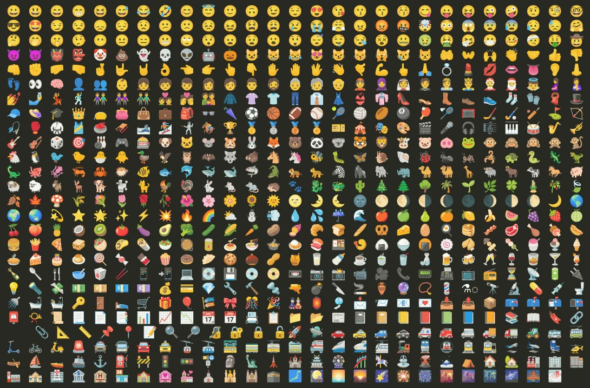

GAMuT documentation
Description
GAMuT is a high-level, user-friendly granular audio musaicking toolkit implemented in Python. Audio musaicking (also spelled mosaicking), can be defined as “the process of recomposing the temporal evolution of a given target audio file from segments cut out of source audio materials”.
Audio musaicking: A visual analogy
If you’re new to audio musaicking, let’s consider the following visual analogy:
• Let's imagine we want the computer to reconstruct this portait of Bob Ross, but only using bits and pieces of other images. We will call this portait the target, and the collection of other images the corpus.The target: A portrait of Bob Ross• Now, let's imagine we tell the computer that the corpus will be all available emojis. The computer will then try to find the best subset of emojis, based on how similar they are in shape, color, and other features to the target, and attempt to reconstruct the portrait of Bob Ross. The corpus: A collection of emoji• Thus, the computer might give us something like this — a portrat of Bob Ross, made with several emoji.
Although this wasn't actually done by a computer, but manually drawn by LA-based artist Yung Jake with the emoji.ink tool, the idea still holds — audio mosaicking consists of reconstructing a target using a corpus, but with audio instead of images.
The computer would then go through a collection of audio files, analyze every sound, and try to pick the bits and pieces (i.e., audio grains) that are most similar to the target, and assembled them into an audio mosaic.Visual analogy of audio musaicking: Emoji Bob Ross (by Yung Jake)
Audio examples
Here are 4 examples of audio musaicking made with GAMuT, each using different corpora on the same audio target.
Example 1
Target nameAudio inputExcerpt of Ángel Gonzalez' muerte en el olvido:
Yo sé que existo
porque tú me imaginas.
Soy alto porque tú me crees
alto, y limpio porque tú me miras
con buenos ojos,
con mirada limpia.
Corpus nameCorpus sizeAudio outputFemale singer voice corpus1221 audio filesCmaj7 chord notes corpus340 audio filesTam-tam corpus2878 audio files
Example 2
Target nameAudio inputDrumset loopCorpus nameCorpus sizeAudio outputGuitar corpus28 audio filesAnimal sounds corpus51 audio filesVocal sounds corpus768 audio files
Example 3
Target nameAudio inputExcerpt from J.S. Bach's BadinerieCorpus nameCorpus sizeAudio outputOrchestral music corpus64 audio filesPercussion corpus282 audio filesViolin sounds corpus658 audio files
Example 4
Target nameAudio inputFemale pop singerCorpus nameCorpus sizeAudio outputPiano corpus177 audio filesViolin corpus658 audio filesCommercial music corpus140 audio files
Table of contents:
- Installation
- Getting started
- Tutorials
- Tutorial 1: Basic audio musaicking with GAMuT
- Tutorial 2: Creating an audio corpus
- Tutorial 3: Creating an audio mosaic
- Tutorial 4: Converting mosaic to audio
- Tutorial 5: Audio musaicking parameters
- Tutorial 6: Audio feature analysis
- Tutorial 7: Mixing corpora
- Tutorial 8: Portability
- Tutorial 9: Audio effects
- Next steps
- Tutorials
- Command-line interface
- Graphical user interface
- Reference
To visualize contents in alphabetical order, see Index.